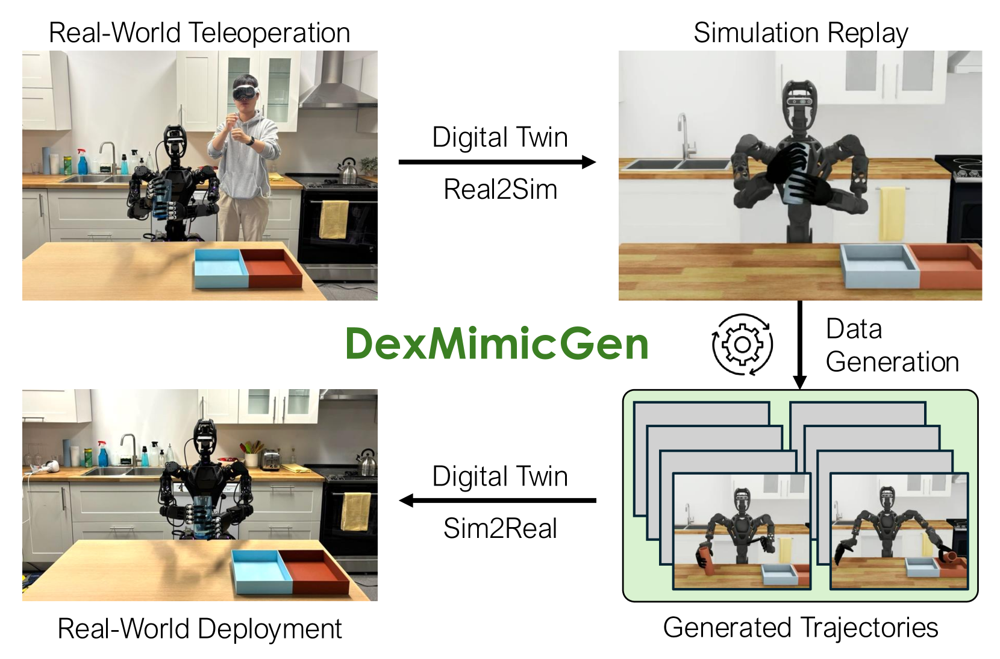
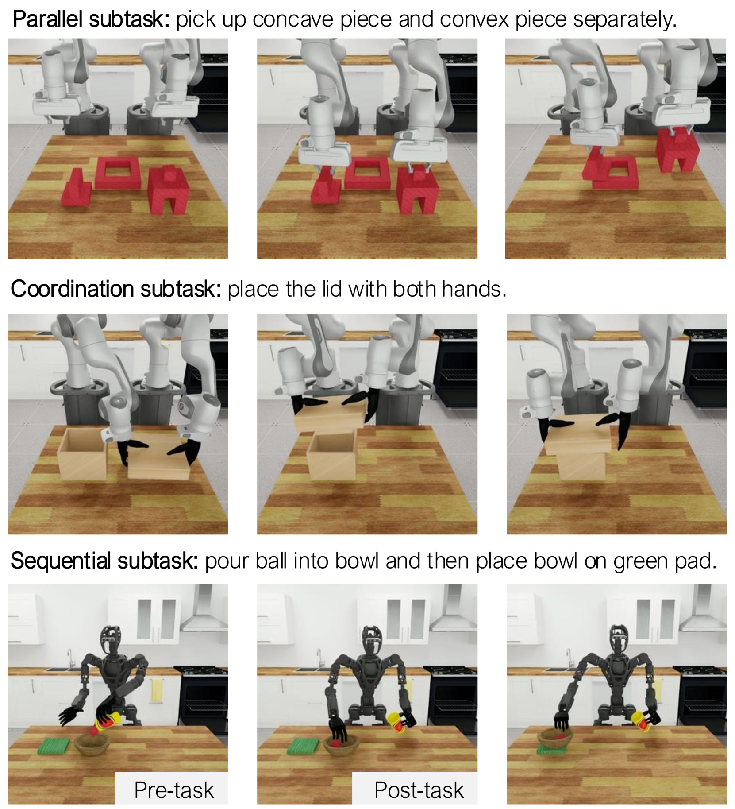
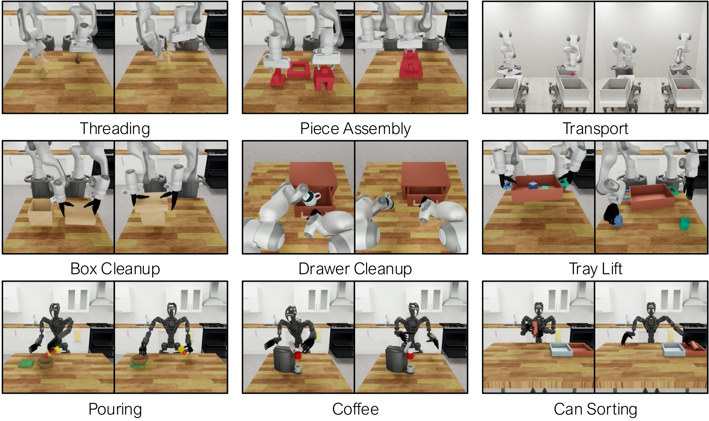
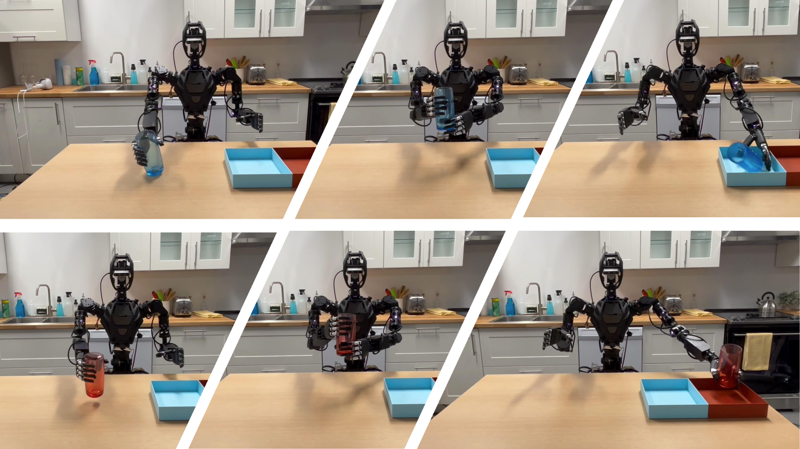

← 논문 리스트로 돌아가기cs.RO · Bimanual · Dexterous · Data Generation
DexMimicGen: Automated Data Generation for Bimanual Dexterous Manipulation via Imitation Learning
Zhenyu Jiang, Yuqi Xie, Kevin Lin, Zhenjia Xu, Weikang Wan, Ajay Mandlekar, Linxi "Jim" Fan, Yuke Zhu · UT Austin · NVIDIA Research · UC San Diego · ICRA 2025
제출: 2024년 10월 31일 (v1) · 2025년 3월 6일 (v2) · 60 데모 → 21,000 합성 데모
한 줄 요약 (TL;DR)
단일 팔(1개 팔) 데이터 생성 시스템인 MimicGen(NVIDIA·UT Austin, 2023 — subtask 단위로 인간 데모의 end-effector 궤적을 새 물체 pose에 맞춰 SE(3) 변환·재실행해 합성 데모를 자동 확장하는 파이프라인)을 양팔 손재주(bimanual dexterous) 조작 및 휴머노이드+다지 손(dexterous hand)으로 확장한 시스템. 두 팔의 동시성을 처리하기 위해 subtask를 Parallel(독립), Coordination(동기), Sequential(순서 제약) 3종으로 분류하고 팔별 action queue·동기화·대기 규칙으로 조립. 9개 시뮬 태스크·3종 로봇(Panda 병렬 그리퍼, Panda 다지 손, GR-1 휴머노이드+Inspire 손)에서 60개 인간 데모 → 21,000개 합성 데모로 확장, Diffusion Policy가 대부분 태스크에서 70~97% 성공률 달성(예: Can Sorting 0.7% → 97.3%, Piece Assembly 3.3% → 80.7%). 실기(Fourier GR-1 + Inspire 손)에서도 Can Sorting을 real-only 0%에서 sim 데이터로 90%까지 끌어올림.
1배경 · 문제의식
휴머노이드·양팔 다지 로봇에서 모방학습(BC, Behavioral Cloning)이 유망하나, 대규모 인간 데모 수집은 매우 비싸다. Apple Vision Pro·특수 exoskeleton 등으로 손 pose까지 원격조종해야 하기 때문. 단일 팔에서는 MimicGen(Mandlekar et al., 2023)이 "적은 인간 데모 → 많은 합성 데모"의 자동 확장을 성공시켰다. MimicGen의 핵심 아이디어는: (1) 각 데모를 객체 중심 subtask(예: "블록 잡기", "구멍에 맞추기")로 분할, (2) 각 subtask의 end-effector 궤적을 새 초기 물체 pose T′에 대해 SE(3) 변환(T′·T−1·궤적)해 재현, (3) 시뮬에서 실행 후 성공한 궤적만 보관.
그러나 양팔+다지 손+휴머노이드로 옮기면 새 난제가 생긴다: ① 두 팔이 서로 다른 subtask를 병렬 수행하거나(예: 왼손이 컵 잡는 동안 오른손이 커피 캡슐 옮김), ② 정확히 동기화된 협업이 필요하거나(예: 큰 쟁반 함께 들기, 물건 손에서 손으로 handover), ③ 선후 관계가 있다(왼손이 뚜껑 열어야 오른손이 안에 넣음). 단일 팔 MimicGen엔 이런 두 팔 상호작용을 다룰 개념이 없다. 저자들은 이를 subtask 3종 분류·팔별 큐·동기화 규칙으로 해결한다.
2핵심 Contribution
DexMimicGen 시스템 — MimicGen을 양팔 손재주 조작으로 확장. subtask를 팔별로 분해·변환·재조립하는 첫 자동 데이터 생성 파이프라인. 60개 인간 데모에서 21,000개 합성 데모 생성.
3종 subtask 분류(핵심 개념) — Parallel(팔이 독립적으로 자기 큐 실행), Coordination(두 팔의 상대 pose를 맞춰 동기 실행), Sequential(pre-subtask 완료 대기)로 두 팔의 동시성·타이밍 문제를 명시화.
9개 태스크·3종 embodiment의 대규모 벤치마크 — Panda 병렬 그리퍼(3), Panda + 다지 손(3), GR-1 휴머노이드 + Inspire 손(3). BC-RNN, BC-RNN-GMM, Diffusion Policy로 정책 학습, Demo-Noise baseline 대비 대폭 우위.
Real2Sim2Real 파이프라인 실증 — Fourier GR-1 휴머노이드 + Inspire 다지 손으로 실기 Can Sorting 성공(sim 데이터만으로 90%). digital twin에서 소수 실기 데모를 확장해 실제 로봇에 배포하는 워크플로 검증.
3Method
준비: MimicGen 리캡
왜: DexMimicGen이 확장하는 원본을 이해해야 한다. MimicGen은 인간 데모를 subtask(하나의 참조 물체 OS를 조작하는 연속 구간)로 나누고, 새 초기 씬에서 OS의 pose가 T′OS로 바뀌면 원본 end-effector 궤적 τ에 Δ = T′OS·TOS−1를 곱해 새 궤적 τ′ = Δ·τ를 만들고, 현재 로봇 pose에서 τ′ 시작점까지 선형 보간으로 연결한 뒤 시뮬에서 실행, 성공한 시도만 데이터셋에 담는다.
3.1 팔별 subtask 분해 (per-arm segmentation)
왜: 두 팔은 각자 다른 물체·다른 속도로 진행하므로, 하나의 시간축이 아닌 팔별 subtask 시퀀스로 데모를 저장해야 한다. 각 팔 a ∈ {L, R}에 대해 subtask 목록 Ma = (m1a, m2a, …)을 정의하고, 각 m는 참조 물체 OS·시작·종료 시점을 갖는다. 세그멘테이션은 heuristic(그리퍼 열림/닫힘 이벤트) 또는 수동 annotation.
3.2 세 가지 subtask 타입 (본 논문의 핵심 개념 장치)
DexMimicGen이 도입한 3종 분류는 "두 팔의 시간적 관계"를 명시화하는 언어다. 이 3종만 있으면 아무리 복잡한 양팔 태스크도 조립·재생 가능하다는 것이 논문의 주장.
Parallel Subtasks (독립 실행)
왜: 두 팔이 서로 다른 물체를 조작할 때, 굳이 타이밍을 맞출 필요가 없다. 각 팔은 자기 action queue에 SE(3) 변환된 궤적을 넣고, 시뮬 매 스텝마다 큐에서 하나씩 dequeue해 실행. 팔이 서로 비동기(asynchronous)로 진행 — 왼팔이 자기 subtask를 먼저 끝내면 다음 subtask로 넘어가고, 오른팔은 자기 페이스로 진행.
Coordination Subtasks (동기 실행)
왜: 큰 물체를 함께 들거나 손↔손 handover처럼 두 팔의 상대 pose가 유지돼야 하는 경우. 두 팔 궤적이 참조 물체 OSc(예: 쟁반)를 공유하고 같은 SE(3) 변환이 두 팔 궤적 모두에 적용된다. 이때 두 큐의 남은 스텝 수가 다르면 동기 붕괴가 생기므로, "각 팔은 상대 팔과 남은 스텝 수가 같아질 때까지 대기" 규칙으로 정렬. Transformation 모드에서는 두 팔 궤적 모두 SE(3) 변환, Replay 모드에서는 handover처럼 상대 팔에 넘겨주는 순간의 원본 궤적을 그대로 재생(변환 없음).
Sequential Subtasks (순서 제약)
왜: 왼팔의 subtask가 끝나야 오른팔의 다음 subtask가 시작 가능한 인과 관계(예: 왼손이 서랍 열어야 오른손이 안에 물건 넣음). Ordering constraint를 명시하고, post-subtask 팔은 pre-subtask 팔의 완료 신호를 받을 때까지 대기. 병렬 큐 위에 얹은 세마포어라고 보면 된다.
3.3 전체 데이터 생성 루프
새 씬에서 물체 pose를 무작위 샘플링·관측.
각 팔 a에 대해 subtask mia의 참조 물체 OS 새 pose를 얻고, 원본 궤적에 SE(3) 변환을 적용해 τ′ia 계산.
현재 로봇 상태에서 τ′ia 시작점까지 선형 보간 궤적을 앞에 이어붙임.
각 팔 큐에 push, subtask 타입 규칙(Parallel/Coord/Seq)에 따라 매 시뮬 스텝에서 dequeue·대기·동기.
에피소드 종료 후 태스크 성공 판정 → 성공한 궤적만 데이터셋에 저장.
3.4 로봇 & 컨트롤러
병렬 그리퍼
Panda × 2, OSC(Operational Space Control) — end-effector pose 지령
다지 손
Panda + Inspire 손 (양쪽), 손가락 관절 지령
휴머노이드
Fourier GR-1 + Inspire 다지 손, IK 기반(mink 라이브러리)
원격조종
Apple Vision Pro(다지 손), iPhone(그리퍼). 손 pose는 OmniH2O retargeting으로 인간→로봇 매핑
시뮬
RoboSuite (MuJoCo 물리엔진)
4실험 결과
9개 시뮬 태스크 성공률 (표 I, Diffusion Policy 정책, 1000 생성 데모로 학습)
Embodiment
Task
Source(60 데모)
+DexMimicGen(1000)
Panda + 병렬 그리퍼
Threading
2.7%
69.3%
Piece Assembly
3.3%
80.7%
Box Cleanup
2.0%
92.0%
Panda + 다지 손
Tray Lift
10.0%
88.7%
Drawer Cleanup
0.7%
80.0%
Pouring
4.7%
79.3%
GR-1 휴머노이드 + 다지 손
Transport
5.3%
83.3%
Can Sorting
0.7%
97.3%
Coffee
4.7%
77.3%
모든 9개 태스크에서 원본 60데모 대비 절대치 +70pp 이상의 향상. 정책은 image-based BC (Diffusion Policy). 태스크당 50 에피소드 평가.
초기 분포 범위 확대 (표 II, D0/D1/D2)
D0는 학습 데모의 초기 물체 분포와 동일, D1·D2는 점점 더 넓은 물체 배치 분포. DexMimicGen은 더 넓은 분포에서 데이터를 생성할 수 있고, 정책도 넓은 D1·D2에서 학습해 강건성 확보. 예: Threading D2에서도 60%대 성공률 유지(source는 <5%).
실기 (Fourier GR-1 + Inspire 다지 손, Can Sorting)
실기에서 40개 인간 데모 수집 → 시뮬 digital twin에서 DexMimicGen으로 확장 → 학습된 정책을 실기에 배포. Real-only source: 0% → DexMimicGen sim 데이터: 90% 성공률. sim-to-real gap이 있음에도 대규모 합성 데이터의 이득이 압도적.
5Ablation (주요 발견)
vs Demo-Noise baseline (표 III): 원본 데모의 action에 Gaussian noise를 더해 인위 증강하는 단순 baseline과 비교. DexMimicGen이 모든 태스크에서 +58pp 이상 우위. 단순 노이즈로는 새 물체 pose를 커버할 수 없음을 입증.
데이터셋 크기 스케일링: 100·300·1000·3000 생성 데모로 학습. 대부분 태스크는 1000개에서 saturate, 그 이상은 diminishing return. 즉 "굳이 21K 다 안 써도 1K면 충분"인 경우가 많음.
Coordination의 Transform vs Replay: handover가 있는 Transport에서 Replay 모드 63.3% vs Transform 46.0% — 손↔손 인계 순간엔 원본 궤적을 그대로 재생하는 편이 유리. 반대로 쟁반 함께 들기(Tray Lift)처럼 순수 pose 매칭 태스크는 Transform이 유리.
Sequential 순서 제약의 효과: 순서 제약을 켜면 sequential 태스크(Drawer Cleanup, Coffee 등)에서 +2~12pp 향상. 제약 없으면 pre-subtask가 완료되기 전 post-subtask가 시도돼 자주 실패.
정책 아키텍처:Diffusion Policy > BC-RNN-GMM > BC-RNN — 손재주 조작의 다중 모드 action 분포를 커버하는 diffusion이 일관되게 최고.
6핵심 Figure / Table

Figure 1 — DexMimicGen 개요. 소수의 인간 원격조종 데모(왼쪽) → 팔별 subtask 분해·SE(3) 변환·synchronized replay를 통한 자동 데이터 확장(중앙) → 21K 합성 데모로 학습된 정책이 시뮬·실기 양팔 다지 태스크를 수행(오른쪽). Panda 병렬 그리퍼/Panda 다지 손/GR-1 휴머노이드 3종 embodiment 커버. (출처: arXiv:2410.24185)

Figure 2 — 3종 subtask 타입.Parallel(두 팔이 독립 큐로 비동기 실행), Coordination(같은 SE(3) 변환을 두 팔에 적용, 남은 스텝 수 동기), Sequential(pre-subtask 완료 후 post-subtask 시작). 이 3종 조합으로 임의의 양팔 태스크를 모델링. (출처: arXiv:2410.24185)

Figure 4 — 9개 벤치마크 태스크. Panda 병렬 그리퍼: Threading·Piece Assembly·Box Cleanup / Panda 다지 손: Tray Lift·Drawer Cleanup·Pouring / GR-1 휴머노이드: Transport·Can Sorting·Coffee. 3 embodiment × 3 태스크 매트릭스로 방법의 embodiment-independence를 검증. (출처: arXiv:2410.24185)

Figure 6 — 실기 Real2Sim2Real. Fourier GR-1 휴머노이드 + Inspire 다지 손이 실기에서 캔을 색상별 분류. 실기 40데모 → digital twin에서 DexMimicGen으로 확장 → 학습된 정책 실기 배포로 0% → 90% 성공률 달성. (출처: arXiv:2410.24185)
Table I — DexMimicGen 결과의 근거. 9개 태스크 모두에서 60 source 데모(<10% 성공률) 대비 1000 생성 데모(69~97%)로 확장 시 큰 폭 향상. 특히 humanoid+dexterous가 최고 성과(Can Sorting 97.3%).